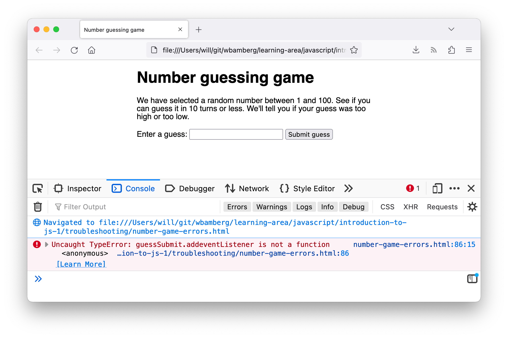
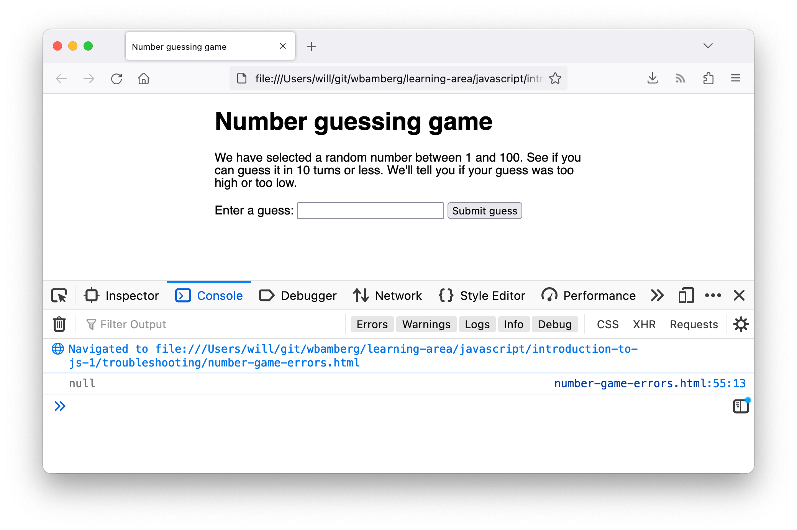

When you built up the "Guess the number" game in the previous article, you may have found that it didn't work. Never fear — this article aims to save you from tearing your hair out over such problems by providing you with some tips on how to find and fix errors in JavaScript programs.
| Prerequisites: | Basic computer literacy, a basic understanding of HTML and CSS, an understanding of what JavaScript is. |
|---|---|
| Objective: | To gain the ability and confidence to start fixing problems in your own code. |
Generally speaking, when you do something wrong in code, there are two main types of error that you'll come across:
Okay, so it's not quite that simple — there are some other differentiators as you drill down deeper. But the above classifications will do at this early stage in your career. We'll look at both of these types going forward.
To get started, let's return to our number guessing game — except this time we'll be exploring a version that has some deliberate errors introduced. Go to Github and make yourself a local copy of number-game-errors.html (see it running live here).
Note: You might well have your own version of the game example that doesn't work, which you might want to fix! We'd still like you to work through the article with our version, so that you can learn the techniques we are teaching here. Then you can go back and try to fix your example.
At this point, let's consult the developer console to see if it reports any syntax errors, then try to fix them. You'll learn how below.
Earlier on in the course we got you to type some simple JavaScript commands into the developer tools JavaScript console (if you can't remember how to open this in your browser, follow the previous link to find out how). What's even more useful is that the console gives you error messages whenever a syntax error exists inside the JavaScript being fed into the browser's JavaScript engine. Now let's go hunting.
number-game-errors.html open in, and open your JavaScript console. You should see an error message along the following lines: guessSubmit.addeventListener('click', checkGuess);
addEventListener().addeventListener to addEventListener should fix this. Do this now.Note: See our TypeError: "x" is not a function reference page for more details about this error.
Null is a special value that means "nothing", or "no value". So lowOrHi has been declared and initialised, but not with any meaningful value — it has no type or value.checkGuess() { ... } block). As you'll learn in more detail in our later functions article, code inside functions runs in a separate scope than code outside functions. In this case, the code was not run and the error was not thrown until the checkGuess() function was run by line 86.lowOrHi.textContent = 'Last guess was too high!';
textContent property of the lowOrHi constant to a text string, but it's not working because lowOrHi does not contain what it's supposed to. Let's see why this is — try searching for other instances of lowOrHi in the code. The earliest instance you'll find in the JavaScript is on line 48:
const lowOrHi = document.querySelector('lowOrHi');
null after this line has been run. Add the following code on line 49:
console.log(lowOrHi);
Note: console.log() is a really useful debugging function that prints a value to the console. So it will print the value of lowOrHi to the console as soon as we have tried to set it in line 48.
console.log() result in your console.  Sure enough, lowOrHi's value is null at this point, so there is definitely a problem with line 48.document.querySelector() method to get a reference to an element by selecting it with a CSS selector. Looking further up our file, we can find the paragraph in question:
<p class="lowOrHi"></p>
.), but the selector being passed into the querySelector() method in line 48 has no dot. This could be the problem! Try changing lowOrHi to .lowOrHi in line 48.console.log() statement should return the <p> element we want. Phew! Another error fixed! You can delete your console.log() line now, or keep it to reference later on — your choice.Note: See our TypeError: "x" is (not) "y" reference page for more details about this error.
addeventListener to .addEventListener. Do this now.At this point, the game should play through fine, however after playing through a few times you'll undoubtedly notice that the "random" number you've got to guess is always 1. Definitely not quite how we want the game to play out!
There's definitely a problem in the game logic somewhere — the game is not returning an error; it just isn't playing right.
randomNumber variable, and the lines where the random number is first set. The instance that stores the random number that we want to guess at the start of the game should be around line number 44:
let randomNumber = Math.floor(Math.random()) + 1;
randomNumber = Math.floor(Math.random()) + 1;
console.log() again — insert the following line directly below each of the above two lines:
console.log(randomNumber);
randomNumber is equal to 1 at each point where it is logged to the console.To fix this, let's consider how this line is working. First, we invoke Math.random(), which generates a random decimal number between 0 and 1, e.g. 0.5675493843.
Math.random()
Next, we pass the result of invoking Math.random() through Math.floor(), which rounds the number passed to it down to the nearest whole number. We then add 1 to that result:
Math.floor(Math.random()) + 1
Rounding a random decimal number between 0 and 1 down will always return 0, so adding 1 to it will always return 1. We need to multiply the random number by 100 before we round it down. The following would give us a random number between 0 and 99:
Math.floor(Math.random()*100);
Hence us wanting to add 1, to give us a random number between 1 and 100:
Math.floor(Math.random()*100) + 1;
Try updating both lines like this, then save and refresh — the game should now play like we are intending it to!
There are other common errors you'll come across in your code. This section highlights most of them.
This error generally means that you have missed a semicolon at the end of one of your lines of code, but it can sometimes be more cryptic. For example, if we change this line inside the checkGuess() function:
let userGuess = Number(guessField.value);
to
let userGuess === Number(guessField.value);
It throws this error because it thinks you are trying to do something different. You should make sure that you don't mix up the assignment operator (=) — which sets a variable to be equal to a value — with the strict equality operator (===), which tests whether one value is equal to another, and returns a true/false result.
Note: See our SyntaxError: missing ; before statement reference page for more details about this error.
This could be another symptom of mixing up the assignment and strict equality operators. For example, if we were to change this line inside checkGuess():
if (userGuess === randomNumber) {
to
if (userGuess = randomNumber) {
the test would always return true, causing the program to report that the game has been won. Be careful!
This one is pretty simple — it generally means that you've missed the closing parenthesis at the end of a function/method call.
Note: See our SyntaxError: missing ) after argument list reference page for more details about this error.
This error usually relates to an incorrectly formed JavaScript object, but in this case we managed to get it by changing
function checkGuess() {
to
function checkGuess( {
This has caused the browser to think that we are trying to pass the contents of the function into the function as an argument. Be careful with those parentheses!
This is easy — it generally means that you've missed one of your curly braces from a function or conditional structure. We got this error by deleting one of the closing curly braces near the bottom of the checkGuess() function.
These errors generally mean that you've left off a string value's opening or closing quote mark. In the first error above, string would be replaced with the unexpected character(s) that the browser found instead of a quote mark at the start of a string. The second error means that the string has not been ended with a quote mark.
For all of these errors, think about how we tackled the examples we looked at in the walkthrough. When an error arises, look at the line number you are given, go to that line and see if you can spot what's wrong. Bear in mind that the error is not necessarily going to be on that line, and also that the error might not be caused by the exact same problem we cited above!
Note: See our SyntaxError: Unexpected token and SyntaxError: unterminated string literal reference pages for more details about these errors.
So there we have it, the basics of figuring out errors in simple JavaScript programs. It won't always be that simple to work out what's wrong in your code, but at least this will save you a few hours of sleep and allow you to progress a bit faster when things don't turn out right, especially in the earlier stages of your learning journey.
{{PreviousMenuNext("Learn/JavaScript/First_steps/A_first_splash", "Learn/JavaScript/First_steps/Variables", "Learn/JavaScript/First_steps")}}